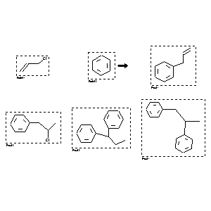

|  |
| FA | RX(1); FLST(1); RX(2) |
Reaction (1 of 1)
| Reaction ID | 4272001 |
| Reactant BRN | 635704; 969212 |
| Reactant | 3-chloro-propene; benzene |
| Product BRN | 1098501; 2041552; 2044542; 2042840 |
| Product | allylbenzene; (2-chloro-propyl)-benzene; 1,1-diphenyl-propane; 1,2-diphenyl-propane |
| No. of Reaction Details | 2 |
Reaction Details (1 of 1)
| Reaction Classification | Chemical behaviour |
| Yield | 70 percent (BRN=1098501); 15 percent (BRN=2041552) |
| Reagent | ZnCl2/SiO2, K2CO3/Al2O3 |
| Time | 1 hour(s) |
| Temperature | 30 |
| Other Conditions | var. of reagents |
| Subject Studied | Product distribution |
| Citation Pointer | 5968398; Journal; Kodomari, Mitsuo; Nawa, Satoru; Miyoshi, Tadahiro; JCCCAT; J.Chem.Soc.Chem.Commun.; EN; 18; 1995; 1895-1896; |
Reaction Details (2 of 1)
| Reaction Classification | Preparation |
| Yield | 70 percent (BRN=1098501); 15 percent (BRN=2041552) |
| Reagent | ZnCl2/SiO2, K2CO3/Al2O3 |
| Time | 1 hour(s) |
| Temperature | 30 |
| Citation Pointer | 5968398; Journal; Kodomari, Mitsuo; Nawa, Satoru; Miyoshi, Tadahiro; JCCCAT; J.Chem.Soc.Chem.Commun.; EN; 18; 1995; 1895-1896; |
Reference (1 of 1)
| Citation Number | 5968398 |
| Document Type | Journal |
| Authors | Kodomari, Mitsuo; Nawa, Satoru; Miyoshi, Tadahiro |
| CODEN | JCCCAT |
| Journal Title | J.Chem.Soc.Chem.Commun. |
| Language Code | EN |
| Number | 18 |
| Publication Year | 1995 |
| Page | 1895-1896 |